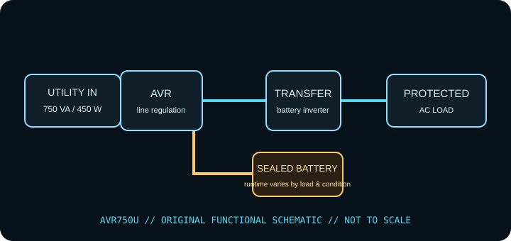

[ LINE-INTERACTIVE UPS // IDENTIFIED MODEL ]
Tripp Lite AVR750U
Eaton / Tripp Lite line-interactive AVR UPS, rated 750 VA / 450 W. This record describes the identified regional model only. Check the complete nameplate, hardware revision and matching manufacturer documentation before installation or load selection.

ARCHIVAL IDENTIFICATION: Record complete SKU/suffix, input/output labels, serial/date code, hardware revision, battery type/age, accessories, test conditions and manual revision. Similar model names do not establish electrical equivalence.
Exact model specifications
| Manufacturer / exact model | Eaton / Tripp Lite AVR750U (North American model record; verify complete SKU, revision and serial/date label). |
|---|---|
| Topology | Line-interactive UPS with automatic voltage regulation (AVR); supported input fluctuations may be corrected without battery transfer. This is not a standby-only or online double-conversion unit. |
| Capacity / input | 750 VA / 450 W; 120 V AC North American model; use the stated input range and grounded NEMA 5-15P supply from the manufacturer manual. VA and W are separate limits; stay under both. |
| AC output / waveform | 120 V AC nominal; AVR regulates supported sags/surges and stepped approximation to a sine wave on battery, as specified for AVR750U. |
| Outlets / load assignment | Twelve NEMA 5-15R receptacles, divided into battery-backed + surge and surge-only groups. Follow the exact rear-panel labeling/manual rather than guessing by position. |
| Battery chemistry / service | Internal sealed lead-acid battery; manufacturer replacement cartridge listed as RBC51. Use only the specified pack and replacement instructions. |
| Runtime / test conditions | Use the AVR750U manufacturer runtime chart at the actual watt draw. Published runtime is load-dependent; do not apply a maximum low-load example to a computer or network rack without measuring its watts. Runtime tests should record connected watts, charge state, battery age/health, temperature and test date. |
| Host signaling / software | USB connection for host monitoring/shutdown with the supported PowerAlert software, according to Eaton/Tripp Lite model documentation. Verify current OS support and distinguish the data interface from any USB charging function. |
| Load compatibility | 120 V / 60 Hz equipment below both 750 VA and 450 W, with startup behavior suitable for the UPS. AVR regulation is not a substitute for matching the supply voltage, grounding and equipment manual. |
Safety, service & limits
- Use only with the grounded voltage/frequency and environment allowed by the complete unit label and current model manual. Never defeat grounding or daisy-chain UPS outputs.
- Do not connect heaters, laser printers, motors or other high-inrush loads unless the manufacturer expressly permits them and their steady-state and startup demand remain within the UPS limits.
- Do not open an energized UPS or work on battery terminals. Sealed lead-acid batteries can deliver destructive fault current; avoid short circuits, damaged/swollen/leaking cells and unapproved replacements. Follow the manufacturer isolation, service and recycling directions.
- Remove damaged equipment from service if the case, cord, plug, grounding, outlet, battery or indicator shows heat, swelling, leakage, cracking, odor, corrosion or other fault. Follow the maker’s safe shutdown guidance.
- Keep ventilation clear, protect the unit from liquid and excessive heat, and test host shutdown and runtime under a controlled load. Battery backup is finite and is not a substitute for code-compliant wiring or an independent data backup.
Manufacturer sources and documentation
- Eaton / Tripp Lite — AVR750U product informationManufacturer information for the named model; confirm revision and regional suffix on the actual unit.
- Eaton — AVR750U product specificationsManufacturer information for the named model; confirm revision and regional suffix on the actual unit.
- Eaton / Tripp Lite — AVR750U owner manualManufacturer information for the named model; confirm revision and regional suffix on the actual unit. Original page is gone; this is the Internet Archive’s copy.